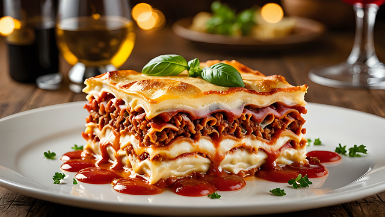

Lasagne
20 Min
Mittel
20.06.2025
Zutaten für:
| 125 g | Hackfleisch |
| 0.25 | Zwiebel(n) |
| 0.25 | Knoblauchzehe(n) |
| 0.25 Bund | Petersilie |
| 0.25 EL | Tomatenmark |
| 200 g | Tomaten, geschält (Dosen) |
| 50 ml | Rotwein |
| 125 ml | Milch |
| 10 g | Butter |
| 10 g | Mehl |
| 75 g | Lasasgnenplatten |
| 10 g | Butter |
| 20 g | Geriebener Cheddar |
Zubereitung
Zeit 30 min
Gesamtzeit 50 min
-
Ragú Bolognese:
In einem Topf das Olivenöl erhitzen, das Hackfleisch darin rundherum anbraten und die gehackten Zwiebeln und die gehackte Petersilie dazugeben. Knoblauch in feinen Scheiben und Tomatenmark dazu rühren und mitbraten. Mit den Dosentomaten aufgießen, salzen und pfeffern. Rotwein nach Belieben beifügen. Das Ragú mindestens eine halbe Stunde lang bei geöffnetem Topf einkochen lassen. -
Béchamelsauce:
Butter in einem kleinen Topf schmelzen und das Mehl mit dem Schneebesen unterrühren und hellgelb anschwitzen. Die Milch dazugießen und die Sauce glatt rühren. Wer zu langsam gerührt hat und Klümpchen in der Sauce findet, kann die Sauce durch ein feines Haarsieb passieren und dann weiterkochen lassen. Die Sauce sollte fast eine halbe Stunde lang auf kleiner Flamme köcheln, damit sie den Mehlgeschmack verliert. Mit Salz, Pfeffer und Zitronensaft sowie etwas Muskatnuss abschmecken. -
Zubereitung der Lasagne:
In einer gebutterten, feuerfesten Form etwas Ragú Bolognese verteilen, eine Schicht Lasagneplatten darauf legen, die Nudelschicht wieder mit Ragú und dann mit einer Schicht Béchamel bedecken. Anschließend wieder eine Schicht Nudeln, Ragú und Béchamel. So Schicht für Schicht die Form füllen. Die letzte Schicht sollte die Béchamelsauce bilden. Dick mit geriebenem Käse bestreuen.. - Die Lasagne im heißen Backofen bei 180 °C Umluft ca. 30 - 40 Minuten backen, bis die Kruste goldbraun ist.
- 10 min Abkühlen lassen und genießen.